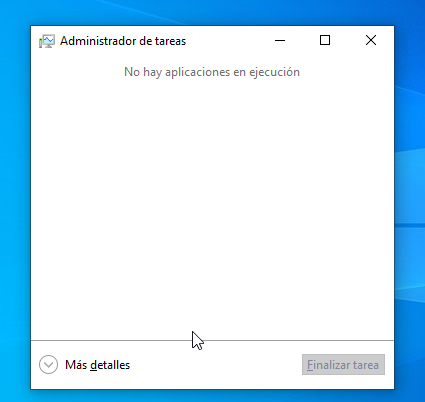

Sprint 6¶
Gestio de Processos¶
Administrador de Tasques¶
L'administrador de tasques és un programa per defecte deWindows que serveix per administrar els processos que s’executen.
Com accedir¶
S’executa fent clic dret a la barra de tasques i seleccionant l’opció “Administrador de Tasques” o “Administrador de Tareas” depenent de l’idioma. També es pot obrir amb la combinació de tecles Ctrl+ Shift + Esc .

L’administrador de tasques mostra molta informació essencial del sistema segons l’apartat:
“Procesos”: Mostra els recursos que els programes estan consumint així com si estan actius o suspesos, entre altres coses.

“Rendimiento”: Mostra els recursos totals del sistema (com la RAM o la velocitat de xarxa) i quants s’estan consumint en temps real.

“Historial de Aplicaciones”: Mostra l’ús de CPU i xarxa per aplicació. És útil per veure quin programa està consumint més recursos al llarg del temps (no només ara mateix).

“Inicio”: Mostra quins programes s’executen automàticament quan arranques el sistema.

”Usuarios”: Mostra els usuaris actius i els processos associats a cada sessió.

”Detalles”: Llista TOTS els processos, amb el seu nom real p.e.: svchost.exe, ID de procés (PID), estat, ús de CPU, memòria, prioritat, etc.

“Servicios”: Mostra tots els serveis de Windows, el seu estat (actiu/inactiu) i el PID si estan actius.

Finalitzar Processos¶
Finalitzar un procés és un recurs que podem arribar a necessitar fer servir, ja sigui per algun programa que se’ns ha quedat congelat o perque el nostre sistema està patint amb els recursos justos.
Per finalitzar un procés podem fer clic dret sobre un procés i seleccionar l’opció “Finalizar tarea” o seleccionar la mateixa opció a la part inferior dreta de l’apartat “Procesos” amb el procés seleccionat.

Comandes¶
Amb ús del símbol del sistema també conegut com a “CMD” o “PowerShell” podem llistar els processos de forma similar a com ho fariem amb Linux amb comandes.
Per obrir una finestra del “cmd” o una finestra de PowerShell, podem executar la combinació de tecles Windows + R i escriure cmd o powershell respectivament. També podem apretar la tecla windwows i escriure exactament el mateix, i sen’s mostraràn les opcions pertinents.


Llistar processos amb CMD¶
Per fer-ho podem utilitzar la comanda tasklist .

Finalitzar processos amb CMD¶
Si el que volem és finalitzar un procés amb la terminal necessitarem el PID o el nom (”Nombre de imagen) del procés que volem finalitzar. Quan el tinguem, podem executar la comanda:
taskkill /IM "nom.exe"

Si ho fem amb el PID:
taskkill /PID “PID”

Llistar Processos amb PowerShell¶
Amb PowerShell les comandes son diferents:
Per llistar els processos utilitzarem: Get-Process .

Finalitzar processos amb PowerShell¶
Per últim, per finalitzar un procés amb PowerShell podem utilitzar la comanda:
Stop-Process -Id “ID”

Gestió d’usuaris i grups.¶
Amb la comanda lusrmgr.msc podem obrir un menú que ens servirà per llistar els usuaris i grups existents així com crear-ne de nous.


Crear Usuaris i Grups¶

Aqui podem veure un menú on es llisten els usuaris i grups existents al sistema.
Si fem clic dret sobre una de les dues carpetes “Usuaris” o “Grups” podem escollir l’opció per crear un usuari o grup, respectivament.


Quan escollim l’opció, haurem de donar una llista de paràmetres que podem veure a la següent imatge:


Per als grups hi ha algunes opcions semblant i altes per incloure qui o què en formarà part del grup.
Eliminar Usuaris i Grups.¶
Per eliminar-los haurem d’entrar dins de la carpeta en qüestió, fer clic dret sobre el grup o usuari en qüestió i seleccionar “Eliminar”, el mateix per als grups.


Afegir Usuaris a Grups¶
Si volem crear un grup i afegir un usuari ho fem de la següent manera:
Primer seleccionarem “Agregar”.

Un cop al menú de la dreta, seleccionarem l’opció “Opciones avanzadas” a la part inferior esquerra de la finestra. Per últim amb les opcions per defecte seleccionarem “Buscar ahora” i navegarem a la llista de la part inferior fins trobar l’objecte que vulguem afegir al grup, en aquest cas l’usuari “Dummy”.

Per últim seleccionarem “Crear” al menú inicial i ja tindriem el grup.
Aquesta iamtge ens mostra també com podem afegir objectes al grup si ja el teniem creat abans, com podrien ser algun dels que venen per defecte amb windows. Només hem de seleccionar l’opció “Agregar…” de la part inferior esquerra. A partir d’aquí podem seguir els passos anteriors.

Les propietats del grup “Dummies” que hem creat.
Gestionar Permisos¶
Els permisos que un o varios usuaris tenen sobre els fitxers o carpetes son fàcilment modificables en Windows.
És tan senzill com fer clic dret sobre el fitxer o carpeta i seleccionar “Propiedades”:

Un cop aquí, ens dirigirem a l’apartat “Seguridad” on es mostren les opcions més avançades.


En aquest menú, podem modificar varies coses:
-
Els permisos dels usuaris i grups per accedir a la carpeta i els seus fitxers.
A les imatges, ja podem veure que hi ha Grups i Usuaris a la llista, pero si volem podem afegir els nostres. Anem a afegir els dos Usuari i Grup que hem creat fa una estona.
Seleccionem l’opció “Editar…” i després “Agregar…”. Trobarem el nostre menú preferit, que ja hem vist varies vegades (seguim els pasos anteriorment mencionats).

Per últim quan haguem afegit els Usuaris/Grups que vulguem, podem seleccionar-los per decidir quins permisos tindran en aquella carpeta o fitxer. Després, per exemple, podem seleccionar el recuadre “Control total” per donar tots els permisos possibles a l’usuari Dummy Dummynson, al què hem selccionat. Apliquem i acceptem.

-
L’herència de la carpeta als seus fitxers.
Per defecte, una carpeta està configurada per compartir les seves propietats i permisos amb els fitxers que conté.
Si no ho volem així, podem seleccionar “Opciones avanzadas” → “Deshabilitar herencia”

Sen’s obrirà el menú següent, on escollirem l’opció que més ens convingue.

Nota: Cal destacar que si, per exemple, donem accés total a un Grup d’usuaris però volem que un d’ells tingui algún permís limitat, haurem d’afegir a l’usuari individualment i limitar els seus permisos manualment, limitacions les quals tenen més pès que els permisos concedits.

Sistemes de fitxers¶
Windows té la seva pròpia aplicació per gestionar les particions i els seus sitemes de fitxers.

Dintre de l’aplicació, podem gestionar els discs, les particions i muntar-los. Per muntar-lo seleccionem “Nuevo volumen simple…”


Seleccionem el volum de la partició.

Podem canviar la lletra de la partició o muntar-la a una carpeta.

Aquí podem formatejar-la i canviar-li el nom.

Per últim, un resum de com quedará.

Ja la tenim.

Còpies de seguretat¶
Per últim veurem com fer còpies de seguretat. Des del tauler de control, o “Panel de control”
hi ha una opció per fer una “Imatge del sistema”.


Aquí seleccionem l’opció “Configurar copias de seguridad” que obrirà un programa predeterminat de Windows per fer-les.

Seleccionem el disc (pot ser extern, de fet és lo recomanat) on guardar l’imatge del sistema.
També podem guardar-lo en la de a un servidor NAS o a una carpeta compartida, cosa que és útil ens ambients empresarials.

Un cop seleccionat on fer la còpia, seleccionem l’opció que preferim i cliquem “Siguiente”.

Per últim Windows ens farà una configuració per fer còpies programades cada tant, podem canviar-ho però és molt recomanable activar-les. Guardem la còpia.

Un cop Windows acabe de fer la còpia, veurem una sèrie de configuracions de les quals es destaca, la de Restaurar els fitxers “Restaurar mis archivos”.

Dintre els menús hi ha una extensa configuració per restaura TOTS I CADA UN dels fitxers guardats a la còpia de forma individual. Caldrà una búsqueda més extensa per tal de recuperar els fitxers.
Còpies de seguretat amb Scripts¶
Si el que volem és fer un script per fer les còpies creem l’srcipt a l’Escriptori amb el contingut següent:
@echo off
setlocal
if not exist "E:\CopiesUsuaris\%USERNAME%" (
mkdir "E:\CopiesUsuaris\%USERNAME%"
)
REM Copiar els fitxers amb ROBOCOPY
robocopy "C:\Users\%USERNAME%" "E:\CòpiesUsuaris\%USERNAME%" /MIR /Z /R:3 /W:5 /XD "AppData"
echo Còpia de seguretat completada.
pause

Automatització de l’script¶
Amb l’anterior punt fem la còpia manualment, però i si volem que es faci automàticament?
Hem de configurar-ho:
Premem Windows + R i escrivim gpedit.msc .

Ens dirigim a “Configuración de usuario”.

Després a “Configuración de Windows”.

Llavors naveguem fins a “Scripts”.

I, per últim, cliquem a “Iniciar sesión”.

Per últim agreguem l’script a la llista.


Ara si iniciem sessió veurem com sen’s ha creat la còpia. Això passarà cada cop que iniciem sessió.